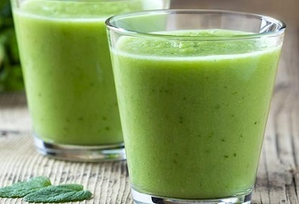

Smoothies are a delicious and quick way to access fruit, vegtables, vitamins and minerals the body needs. Smoothies can be beneficial to all parts of the body from skin to hair, metabolism to immune. I believe smoothies are a great way to feel rebooted and healthier. As there are so many health benefits from smoothies who wouldn't one, plus they're pretty tasty too
When we think of smoothies, we can think lots of sugar. However smoothies can be healthy. By using fruit to make the smoothies taste sweet, hiding the taste of vegtables that sometimes are bland and not tasty at all.You can get your 5 day in just one drink, how easy.